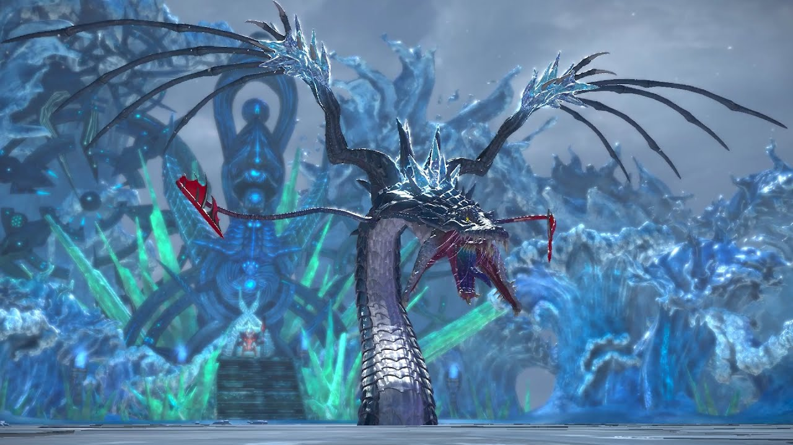
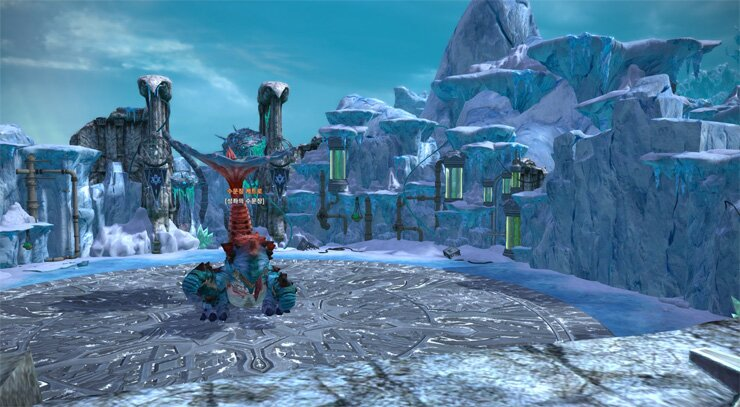
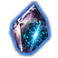
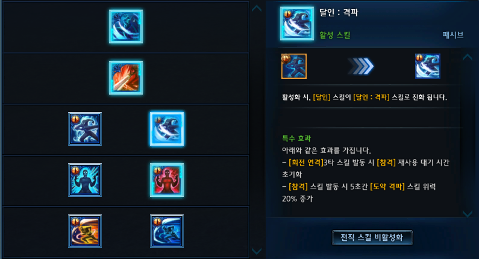
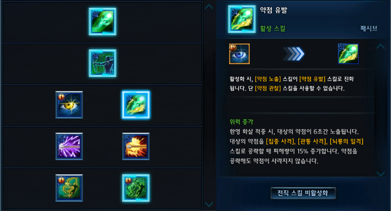
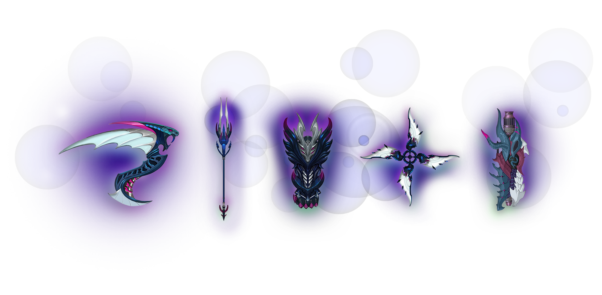
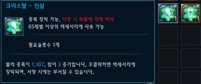
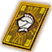
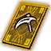

Published: Jan 9,2021
*12/23 23:05 - Additional services, bug fixes have been updated.
*12/23 15:50 - Equipment and other items have been updated.
*12/23 10:27 - Bug fixes have been updated.
*12/22 02:00 - Information on the update schedule has been updated.
*12/20 18:23 - Card fusion, additional service items have been updated.
*12/20 14:28 - Class, skill information, equipment, and additional service items have been updated.
Update
1. Dungeons
● Added new dungeon : Frozen Constellation (pl.) (5-Person)
| Frozen Constellation (pl.) | |
|---|---|
| Entry Limit | None |
| Adventure Coin | 260 |
| Entry Level | 70 |
| Item Level | 522 |

| Frozen Constellation (Hard) (pl.) | |
|---|---|
| Entry Limit | None |
| Adventure Coin | 265 |
| Entry Level | 70 |
| Item Level | 525 |

Key Reward :
Drop table includes Frostflower (pl.) Gear Crate, Starglimmer Accessory Chest, Option lock materials, Option Boost Scroll, Superior Halidom / Relic Token, Card fragment, FROZEN Resonance Stones
● Added new dungeon : Frozen Constellation (1-Person) (pl.)
| Frozen Constellation (1-Person) (pl.) | |
|---|---|
| Entry Limit | None |
| Adventure Coin | None |
| Entry Level | 70 |
| Item Level | 512 |
● Added remade dungeon : Ressurected Shandra Manaya Halls (pl.) (5-Person)
| Ressurected Shandra Manaya Halls (pl.) | |
|---|---|
| Entry Limit | None |
| Adventure Coin | 265 |
| Entry Level | 70 |
| Item Level | 526 |
Key Reward :
Drop table includes Frostflower (pl.) Gear Crate, Starglimmer Accessory Chest, Option lock materials, Option Boost Scroll, Superior Halidom / Relic Token, Card fragment, FROZEN Resonance Stones
● Added new dungeon : Ressurected Shandra Manaya Halls (1-Person) (pl.)
| Ressurected Shandra Manaya Halls (1-Person) (pl.) | |
|---|---|
| Entry Limit | None |
| Adventure Coin | None |
| Entry Level | 70 |
| Item Level | None |
Dungeon list was updated
Added and removed select dungeon
Removed Story Quest related to removed dungeons
Added new achievements appropriate to dungeon list, changed select achievements to Legacy Achievements
| Akalath Quarantine | Damned Citadel | Abcess | Velik's Hold | Draakon Arena | Stormed Citadel |
| Grotto of Lost Souls | Catalepticon | Fusion Laboratory (hard) | Desolarus Testing Ground | Bahaar's Sanctum |
| Antaroth's Abyss (hard) | Sky Cruiser Endeavor (hard) | Shadow Sanguinary (hard) | Thaumetal Refinery | Macellarius Catacombs | Forbidden Arena [Hagufna] |
● Key reward from dungeon and Adventure Coin Cost:
| Difficulty | Dungeon | Dungeon Level | Adventure Coin | Item Level | Key reward |
|---|---|---|---|---|---|
| Low | Macellarius Catacombs | 65 | 200 | 512 | Frostflower (pl.) Gear Crate [Superior], Rare Relic/Halidom I Token, Starshimmer Accessory Chest |
| Low | Thaumetal Refinery | 68 | 200 | 513 | Frostflower (pl.) Gear Crate [Superior], Rare Relic/Halidom I Token, Starshimmer Accessory Chest |
| Medium | Forbidden Arena [Hagufna] | 70 | 255 | 517 | Seal of Vitality (pl.),Frostflower (pl.) Gear Crate [Superior], Rare Relic/Halidom II Token, Starglimmer Accessory Chest, Weak FROZEN Resonance Stone |
| High | Shadow Sanguinary (hard) | 70 | 260 | 520 | Frostflower (pl.) Gear Crate [Superior],Superior Relic/Halidom I Token, Starglimmer Accessory Chest, Etching material essence, Kaia's Fury/Wisdom Belt, FROZEN Resonance Stone |
| High | Sky Cruiser Endeavor (hard) | 70 | 260 | 521 | Frostflower (pl.) Gear Crate [Superior],Superior Relic/Halidom I Token, Starglimmer Accessory Chest, Etching material Essence, Kaia's Fury/Wisdom Belt, FROZEN Resonance Stone |
| Highest | Antaroth's Abyss (hard) | 70 | 265 | 524 | Frostflower (pl.) Gear Crate [Mythical],Frostflower (pl.) Gear Crate [Superior],Superior Relic/Halidom II Token, Starglimmer Accessory Chest Etching material essence,Accessory Etching IV (Pumped/Keen/Swift), Greedhead's Option Change Scroll (Kaia's Mask/Brooch/Belt), FROZEN Resonance Stone |
● A penalty debuff occurs if the player does not meet the item level requirement for the instance
2. Resonance dungeons
With the start of FROZEN season, AWAKE season comes to an end
Changed Resonance Stone and Otherworldly Fragment accordingly
| FROZEN Resonance Stone | [Not Tradable] FROZEN Resonance Stone |
| Weak FROZEN Resonance Stone | [Not Tradable] Weak FROZEN Resonance Stone |
|  FROZEN Otherworldly Fragment |
Existing AWAKE Resonance Stone is no longer usable. Newly added FROZEN Resonance Stone must be acquired and used to enter Resonance Dungeons
Existing AWAKE Otherworldly Fragment can still be used, and can only be used on AWAKE season gear (Mahtnan)
FROZEN Otherworldly Fragment can only be used on FROZEN season gear (Frostflower (pl.))
Changed Resonance Dungeon list
Bloody Resonance Gate dungeon list remains the same
| Lucid Resonance Gate (pl.) | Resonance Gate |
|---|---|
| Sky Cruiser Endeavor (hard) | Anataroth's Abyss (hard) |
| Frozen Constellation (pl.) | Frozen Constellation (hard) (pl.) |
| Shadow Sanguinary (hard) | Ressurected Shandra Manaya Halls (pl.) |
Statue per class for Corrupted Skynest (hard) Resonance Dungeon Season 2 will be set in Balderon
Changes were make to be able to select Resonance Dungeon before entering Resonance Gate
3. Classes
● Mastery (pl.)
Slayer and Archer classes can obtain Mastery
| Class | Mastery (pl.) |
|---|---|
| Slayer | Master Slayer (pl.) |
| Archer | Phantom Archer (pl.) |


● Master Slayer (pl.)
| Existing Skill | Mastery (pl.) Skill |
|---|---|
| Distant Blade | Spinning Delay (pl.) |
| Fury Strike | Breaking Strike (pl.) |
| Blade Master (passive) | Blade Master: Giant Leap (pl.) Blade Master: Breakdown (pl.) |
| Energy Rush (passive) | Energy Rush [Enhanced] (pl.) Energy Boost (pl.) |
| Savage Strike | Savage Strike[Protective] (pl.) Savage Strike [Destruction] (pl.) |


● Phantom Archer (pl.)
| Existing Skill | Mastery (pl.) Skill |
|---|---|
| Restraining Arrow | Ghost Arrows (pl.) |
| Arrow Volley | Illusive Explosion (pl.) |
| Find Weakness | Find Weakness [Enhanced] (pl.) Weaken enemy (pl.) |
| Stunning Trap Arrow | Stunning Trap Arrow (pl.) Explosive Trap Arrow (pl.) |
| Wind Walk | Wind Walk [Survival] (pl.) Wind Walk [Ghost] (pl.) |
Warrior
Assault Stance
Changed increase skill damage to monsters from 33% -> 30%
Fatal Would (passive)
Decreased Ignore Physical Resistance increase based on Physical Crit Power by approximately 33%
Poison Blade
Decreased DOT damage increase based on Physical Amplification from 200% -> 150% upon attacking monsters
Decreased DOT damage increase based on Physical Amplification from 3% -> 1% upon attacking players
Changed DOT duration from 10 seconds -> 20 seconds
Brawler
Rhytmic Blows
Changed Internal Wounds effect to increase target's damage received from 32% -> 27%
Archer
Poison Arrow
Changed Poison Arrow DOT stack limit from 3 -> 1
Changed Poison Arrow DOT duration from 10 seconds -> 20 seconds
Mystic
Volley of Curses
Changed Volley of Curses DOT stack limit from 3 -> 1
Class balance
4. Skill Books
Added 'Skill: Mastered power (pl.)'' related item
'Inherent Power (pl.)' significantly increases damage to target during combat
Skill can be learned progressively from level I to II and so on. Level V cannot be learned ahead of previous levels
Levels after Level I require Skill Books acquired from merging 'Fusions (pl.)'' - which can be purchased - and enchanting materials
Skill Books can be learned by classes without Mastery (pl.).Cannot be learned by Slayers, Archers.
While Slayer, Archer classes cannot learn Skill Books directly, Skill Books can be utilized to unlock Mastery effects
5. Gear

Added new gear : Frostflower (pl.)
Provides Weapon, Armor, Foot Armor, Hand Armor
Offers Legendary and Mythical rarity, and Static Option differ based on rarity
Similar to Mahtnan gear, Frostflower (pl.) gear has Static, Support, and Random Options
Support Option is comprised of 1 Unique Option and 2 Random Options and available option levels vary based on rarity
| Equipment | Unique Option | Effect |
|---|---|---|
| Weapon | Doombringer (pl.) | Reduces current HP by 3% of Max HP every 2 seconds. HP drain effect ends if current HP is at or less than 30%. Skill power and healing skill recovery amount increased by 5/6/8/10%. |
| Curse of Primordial Frost (pl.) | When dealing damage, there is a 20/30/40/50% chance to apply Ice Curse and Absolute Zero. Ice Curse reduces the target's Physical and Magical Resistance by 320. Stacks up to 30 times. Absolute Zero deals 0.2% of the target's max HP as damage (max 100,000,000) after stacked 5 times with a 6/5/4/3 second cooldown. |
|
| Primordial Chill (pl.) | Attack Speed reduced by 10%. Skill power and healing skill recovery amount increased by 10/12/14/16%. When a crit power passive buff is activated, the Attack Speed reduction is temporarily nullified. |
|
| Fleeting Whisper (pl.) | Continuously grant a buff every 5 seconds during battle. Increases skill power by 11/13/15/18% for 5 seconds. |
|
| Master Huntsman (pl.) | Increases skill power by 30/40/50% when attacking multiple monsters. | |
| Stormbreaker (pl.) | Increases skill power by 12/14/16/18% when attacking enraged monsters. You take 15% additional damage from enraged monsters. |
|
| Agile Strike (pl.) | Attack Speed increased by 10%. Skill Power and healing skill recovery amount decreased by 8/6/4/1%. |
|
| Song of the Morning (pl.) | Increases Physical and Magical Amplification of you and all nearby allies within 15m by 3/3.5/4/4.5%. | |
| Frostflower's Wish (pl.) | Creates a cold aura with 3 stages. Each stage has a random change of activation. Cooldown of 8 seconds. Deals more damage to higher level targets. III: 10%, 1% IV: 11%, 2% V: 13%, 3% |
|
| Chest | Source of Life (pl.) | Incoming healing skill recovery is increased by 17/22/27/32%. |
| Ancient Frostflower (pl.) | After the battle begins, the amount of incoming healing skill recovery is increased by 1/1/1.5/1.5% every 5 seconds. This effect stacks up to After the battle begins, the amount of incoming healing skill recovery is increased by 1/1/1.5/1.5% every 5 seconds. This effect stacks up to 35/50/35/50 times. | |
| Neophyte's Favored (pl.) | Upon reviving, gain a shield that lasts for 6 seconds. Shield strength is 300.000/400.000/500.000/600.000. Cooldown of 20 minutes. |
|
| Frostflower's Blessing (pl.) | Frostflower Blossom effect is applied every 5 seconds when in combat. At 5 stacks, incoming damage is reduced by 7/9/11/15%. All stacks are consumed when taking damage. |
|
| Seeping Vitality (pl.) | Recovers HP equal to 0.3/0.4/0.5/0.6% of damage dealt. | |
| Guardian of the Storm (pl.) | When your HP is over 80%: - Damage taken is reduced by 2.5/3/3.5/4%. - Damage taken from enraged monsters is reduced by 1.5/2/2.5/3%. |
|
| Petal Shield (pl.) | Petal Shield is applied in combat. Reduces damage by 10%, and is removed when taking damage for 30/25/20/15 seconds. | |
| Song of the Stars (pl.) | Increases Physical Resistance of you and all nearby allies within 15m by 3/3.5/4/4.5%. | |
| Frostflower's Protection (pl.) | Reduces incoming damage of you and all nearby allies within 15m by 2/3/4/5%. | |
| Gloves | Inner Desire (pl.) | Reduces the amount of incoming healing skill recovery by 20/30/40/50%. Skill power and healing skill recovery amount increased by 6/8/10/12%. |
| Wisdom of Frost (pl.) | Increase Power by 2 every 7/6/5/4 seconds while in combat. Effect can stack up to 60 times. |
|
| Master of Gods (pl.) | Decreases cooldown of crit power passive buffs by 9/11/15/20 seconds. Crit power passive buff effect duration increases by 1.2/1.5/2/3 seconds. While crit power passive buffs are applied, skill power and healing skill recovery increased by 15%. |
|
| Locked In (pl.) | The cooldown of evasion skills is doubled. Classes that use Stamina or Resolve have their consumption doubled. Increases skill power and healing skill recovery amount by 8/10/12/14%. |
|
| Ruthless (pl.) | Increases skill power by 8/12/16/20% while dealing damage to a knocked down monster. | |
| Shield Breaker (pl.) | Increases skill power by 20/30/40/50% while dealing damage to a target that has a shield. | |
| Despair (pl.) | When attacking a player, there is a chance to decrease the target's HP Recovery by 20/30/40/50% for 4 seconds. Recovery from beneficial effects does not decrease. Cooldown of 5 seconds. |
|
| Song of the Sun (pl.) | Increases Physical and Magical Piercing of you and all nearby allies within 15m by 916/1100/1283/1468. | |
| Frostflower's Tears (pl.) | Launches a ball of snow at enemies.Deals more damage to higher level targets.Cooldown: 7/6/5/4 seconds | |
| Boots | Tenacious (pl.) | Recovers 1% of max HP every 4/3/2/1 seconds in combat. |
| Frostflower's Patience (pl.) | Frostflower's Patience is applied every 5 seconds in combat. Reduces damage by 0.1% per stack. Stacks up to 20/30/40/50 times. |
|
| Survival Instinct (pl.) | 6/9/12/15% reduced stun duration. Reduces incoming damage by 3% while knocked down. |
|
| Calm Spirit (pl.) | When own HP is 80% or higher, damage taken is reduced by 2.5/3/3.5/4%. | |
| Cold Spring (pl.) | Increases Movement Speed by 16/19/22/25. | |
| Noble Blessing (pl.) | When attacked by a monster while your HP is 50% or less, you gain a shield of 100.000/120.000/140.000/160.000 for 10 seconds. Recovers HP equivalent to 0.1% of damage dealt while attacking with a shield applied. Cooldown of 60 seconds. |
|
| Heightened Senses (pl.) | When you take critical damage from a monster, you gain a shield of 80.000/100.000/120.000/150.000 for 6 seconds. Cooldown of 60 seconds. Reduces incoming critical damage by 11/14/17/20%. |
|
| Song of the Moon (pl.) | Increases Magical Resistance of you and all nearby allies within 15m by 3/3.5/4/4.5%. | |
| Frostflower's Love (pl.) | Greatly enhances certain Frostflower options: - Frostflower's Wish: Cooldown reduced by 1/1.4/1.7/2 seconds. - Frostflower's Tears: Snowball damage increased by 8/12/16/20%. |

Gear Enchant Level Bonuses
| Equipment | +3 | +6 | +9 | +12 |
|---|---|---|---|---|
| Weapon | 0.06 P/MCP | 0.06 P/MCP | 0.06 P/MCP | 0.06 P/MCP |
| Chest | 936 Phy./Mag. Ignore Resist. | 936 Phy./Mag. Ignore Resist. | 936 Phy./Mag. Ignore Resist. | 936 Phy./Mag. Ignore Resist. |
| Gloves | 936 Phy./Mag. Piercing | 936 Phy./Mag. Piercing | 936 Phy./Mag. Piercing | 936 Phy./Mag. Piercing |
| Shoes | 936 Phy./Mag. Ignore Resist. | 936 Phy./Mag. Ignore Resist. | 936 Phy./Mag. Ignore Resist. | 936 Phy./Mag. Ignore Resist. |
Frostflower (pl.) can be enchanted using enchanting materials
Enchanting materials can be acquired by dungeon drop, dismantling Frostflower (pl.) gear, and from Development Merchant
Required enchanting materials drop based on dungeon difficulty. Enchanting materials can be merged to higher tier materials upon right-clicking on lowest enchantment 4-6 materials
1-12 enchanting materials -> Low / Medium dungeons
4-6 enchanting materials -> Medium dungeons
7-9 enchanting materials -> High dungeons
10-12 enchanting materials -> Highest dungeons
Enchanting material 'Precious Sky Lotus (pl.)'' (used to enchant 1-12) can be purchased from Development Merchant from all main cities
Added additional options based on enchantment level
New gear can be acquired from dungeon drop and crafting
Superior rarity gear : Dungeon drop
Mythical rarity gear : Crafting
Can be crafted using materials obtained by dismantling Legendary or Mythical gear
Designs needed to craft gear are sold by crafting merchants in major cities
Removed sources to enchanting materials for Mahtnan gear
Removed sources noted in tooltip appropriately
Adjusted solo dungeon balance appropriate to new gear
6. Items
Rare/Superior dyad vyrsks added.
Rare-grade crystals can be obtained through the Accessory Crystal Box, which can be purchased at 1125 points at the Valkyon Reconnaissance Crystal Store.Legendary-grade crystals can be obtained by collecting 3 rare-grade crystals and fusing them.
Crystals can be broken when you dieCrystal - Chaos
Rare: Increases Magical Amplification by 1107 and Power by 3/Crit Factor by 6/Attack speed by 1%
Superior: Increases Magical Amplification by 1845 and Power by 3/Crit Factor by 6/Attack speed by 1%Crystal - Truth
Rare: Increases Physical Amplification by 1107 and Power by 3/Crit Factor by 6/Attack speed by 1%
Superior: Increases Physical Amplification by 1845 and Power by 3/Crit Factor by 6/Attack speed by 1%Crystal - Hope
Rare: Increases Physical Piercing by 220 and Power by 3/Crit Factor by 6/Attack speed by 1%
Superior: Increases Physical Piercing by 368 and Power by 3/Crit Factor by 6/Attack speed by 1%Crystal - Faith
Rare: Increases Physical Resistance by 553 and Power by 3/Crit Factor by 6/Attack speed by 1%
Superior: Increases Physical Resistance by 922 and Power by 3/Crit Factor by 6/Attack speed by 1%Crystal - Noble
Rare: Increases Magic Piercing by 220 and Power by 3/Crit Factor by 6/Attack speed by 1%
Superior: Increases Magic Piercing by 368 and Power by 3/Crit Factor by 6/Attack speed by 1%Crystal - Eternal
Rare: Increases Ignore Physical Resistance by 353 and Power by 3/Crit Factor by 6/Attack speed by 1%
Superior: Increases Ignore Physical Resistance by 589 and Power by 3/Crit Factor by 6/Attack speed by 1%Crystal - Pure
Rare: Increases Ignore Magic Resistance by 353 and Power by 3/Crit Factor by 6/Attack speed by 1%
Superior: Increases Ignore Magic Resistance by 589 and Power by 3/Crit Factor by 6/Attack speed by 1%Crystal - Harmony
Rare: Increases Magic Resistance by 553 and Power by 3/Crit Factor by 6/Attack speed by 1%
Superior: Increases Magic Resistance by 922 and Power by 3/Crit Factor by 6/Attack speed by 1%

7. Merchant and Reputation Shops
| Item | Cost |
|---|---|
| Skill book: Mastered power (pl.) | 5,350 |
| [Fuser] Book: Inherent Power II (pl.) | 5,350 |
| [Fuser] Book: Inherent Power III (pl.) | 10,700 |
| [Fuser] Book: Inherent Power IV (pl.) | 53,500 |
| [Fuser] Book: Inherent Power V (pl.) | 107,000 |
| Cost | |
|---|---|
| Shining Frosflower Powder (pl.) | 300 |
| Processing Reagent V | 1,150 |
| Cost | |
|---|---|
| Calaberry Juice | 500 |
| Cost | |
|---|---|
| Shining Frostflower Powder (pl.) | 850 |
| Cost | |
|---|---|
| Seal of Vitality (pl.) | 500 |
| Frost Option Change Scroll (pl.) | 5,000 |
| Cost | |
|---|---|
| Shining Frostflower Powder (pl.) | 3 |
| Cost | Account Limit | |
|---|---|---|
| Frost Jewel (pl.) | 10 | 10 |
| Frost Option Change Scroll (pl.) | 5 | 5 |
| Accessory Crystal box | 25 | 1 |
| Starglimmer Accessory Chest | 25 | 2 |
| Starglimmer Transformation Vellum | 5 | 2 |
| Guardian's HP Potion | 5 | 3 |
| Guardian's MP Potion | 5 | 3 |
| Greedhead's Option Change Scroll: Kaia's Mask Greedhead's Option Change Scroll: Kaia's Brooch Greedhead's Option Change Scroll: Kaia's Belt |
5 | 10 |
| Kaia's Jewel | 10 | 15 |
| Kaia's Fury Belt Kaia's Wisdom Belt |
50 | 1 |
| Kaia's Fury Brooch Kaia's Wisdom Brooch |
50 | 1 |
| Kaia's Fury Mask Kaia's Wisdom Mask |
50 | 1 |
| Cost | |
|---|---|
| Common Card Fragment Box | 468 |
| Uncommon Card Fragment Box | 2,804 |
| Common Card Fragment Box (NPC) Common Card Fragment Box (Monster) Common Card Fragment Box (Gatherable) Common Card Fragment Box (Fish) Common Card Fragment Box (Area) |
561 |
| Uncommon Card Fragment Box (NPC) Uncommon Card Fragment Box (Monster) Uncommon Card Fragment Box (Gatherable) Uncommon Card Fragment Box (Fish) Uncommon Card Fragment Box (Area) |
3,365 |
8. Card Collection
| Card | Type | Cost | Effect (common/uncommon/rare) | Obtained from |
|---|---|---|---|---|
| Shandra Manaya | Monster | 3 | Magical Piercing (+800/1200/1500) | Ressurected Shandra Manaya Halls (pl.) |
| Ressurected Shandra Manaya (pl.) | Monster | 3 | Physical Piercing (+800/1200/1500) | Frozen Constellation (pl.), Frozen Constellation (hard) (pl.) |
| Manaya's Core (pl.) | Area | 5 | Physical Crit Power (+0.08/0.12/0.15) | Ressurected Shandra Manaya Halls (pl.) |
| Frozen Constellation (pl.) | Area | 5 | Magical Crit Power (+0.08/0.12/0.15) | Frozen Constellation (hard) (pl.) |
9. Card Fusion
● Added 4 Legendary Cards
● 1-3 Legendary Card Fragments can be acquired by randomly fusing Rare Card Fragments
| Card | Type | Cost | Effect | |
|---|---|---|---|---|
|  | Kaia | Character | 3 | Power +15 |
| Velik | Character | 3 | Power +15 | |
|  | Sky Lotus (pl.) | Gatherable | 4 | Power +15 |
| Frost Flower (pl.) | Gatherable | 3 | Power +15 |
10. Other
● Changed to display confirmation pop-up upon inviting players to Guild
● Revised guide for 'Lv43 Freeing Kaidun' during level progression
● Changed character selection screen to Winter theme
● Revised to display items faster on initial Inventory UI load
● Revised damage splash font
● Disabled stun immunity of select monsters in Island of Dawn (old)
Bug Fixes
● Fixed issue where background shadow does not apply to character shadow
● Fixed issue where players can pass through gate in Antaroth's Abyss (hard) Resonance Dungeon
● Fixed issue where negotation cooldown message is not displayed immediately when negotiation is rejected
● Fixed issue where Mahtnan weapon gear Unique Option 'Cruel Curse' effect to decrease target's resistance does not sync with tooltip
● Fixed issue where combat status does not resolve when dying while Partner with a certain Skill is spawned
● Fixed issue where level check for Frost Flower's Wish (pl.) skill does not work properly
● Fixed issue where Civil Unrest reward box obtained before the update distributes new update tokens
● Fixed issue where [Important] Skills and Glyphs quest is not available to players that have already completed the quest
● Fixed issue where Giant Hatch mount is not tradable
● Fixed issue where reward icons on Ace Dungeon UI does not display properly after the update
● Fixed issue where Guild Ranking reward displays only the last tier
● Fixed issue where shield mechanic in Ace Dungeons wastes time after the update
● Fixed issue where damage font for Drake's Energy effect from Prumir is displayed as normal damage font for Dragon's Energy effect